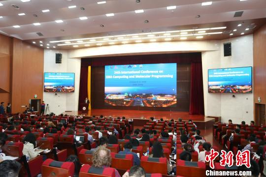

从业23年的丁小邦博士 新一代整形医师
2018年10月09日 17:46 来源: 综合 作者:
10月9日，第24届“DNA计算与分子编程国际会议”在济南召开。来自清华大学、哈佛大学、加利福尼亚大学等近70所高校的近300名海内外学者齐聚山东师范大学，为癌症、遗传病等人类健康难题的治疗建言献策。

近300名海内外学者齐聚“DNA计算与分子编程国际会议” 献策健康难题
中新网济南10月9日电 (郝学娟)第24届“DNA计算与分子编程国际会议”10月9日在济南召开。来自清华大学、哈佛大学、加利福尼亚大学等近70所高校的近300名海内外学者齐聚山东师范大学，为癌症、遗传病等人类健康难题的治疗建言献策。
记者在现场了解到，“DNA计算与分子编程国际会议”是目前DNA计算与分子编程领域公认的权威国际学术会议。首届会议于1995年在美国普林斯顿召开，之后每年举行一次，至今已举办23届。此次会议是首次在中国大陆举行。
据山东师范大学党委书记商志晓介绍，此次会议主要研讨内容为DNA计算、分子编程、基因编辑等高新技术，与生物制药、智能计算等行业密切相关，将促进相关科技成果的转化。
“目前，很多遗传病无法治愈、解决，但随着DNA技术的发展，从基因编辑角度将有很大潜力解决此类疾病。”山东师范大学化学化工与材料科学学院讲师高晓南介绍说，此次会议主要聚焦癌症、遗传病等人类健康难题的治疗。
来自青岛大学化学化工学院副教授于正泽告诉记者，目前他正在研究DNA编辑在肿瘤治疗药物方面的应用，此次参会主要想和与会专家探讨DNA设计与编程类的细节问题。“理论上说，DNA材料的生物相容性比较好，用于治疗肿瘤不会引起强烈排斥反应，能有效到达治疗部位。”
出席活动的中共济南市委副书记苏树伟指出，此次会议汇聚了来自海内外DNA计算与分子编程领域的顶尖专家，为该领域的研究者提供了良好的交流平台，对推动中国在DNA计算与分子编程领域的发展具有重要作用。